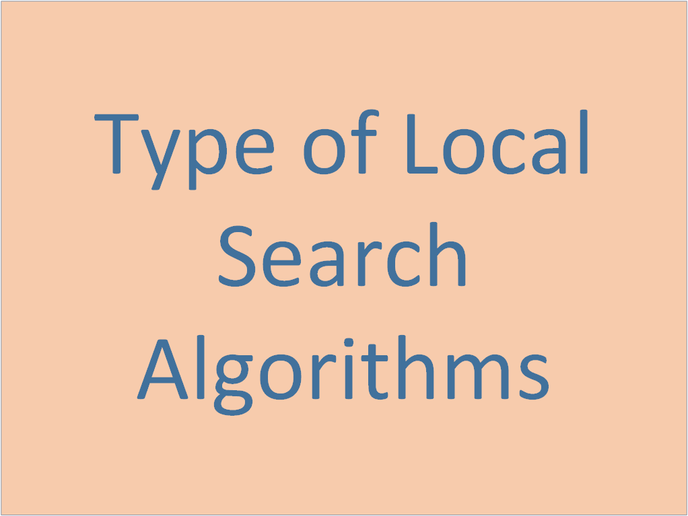

Local Search:
Local search algorithms are essential tools in artificial intelligence and optimization, employed to find high-quality solutions in large and complex problem spaces. Key algorithms include Hill-Climbing Search, Simulated Annealing, Local Beam Search, Genetic Algorithms, and Tabu Search.

Types Of Local Search:
- Hill-Climbing Search Algorithm
- Simulated Annealing
- Local Beam Search
- Genetic Algorithms
- Tabu Search
1. Hill-Climbing Search Algorithm
Hill-Climbing is a straightforward local search algorithm that iteratively moves towards better solutions. It is often used for optimization problems where the goal is to find the peak of a landscape, represented by an objective function.
Process:
- Start: Begin with an initial solution.
- Evaluate: Assess the neighboring solutions.
- Move: Transition to the neighbor with the highest objective function value if it improves the current solution.
- Repeat: Continue this process until no better neighboring solution exists.
Types:
- Simple Hill-Climbing: Chooses the first neighbor that improves the solution.
- Steepest-Ascent Hill-Climbing: Evaluates all neighbors and selects the best one.
- Stochastic Hill-Climbing: Randomly selects neighbors to explore.
Pros:
- Easy to implement.
- Works well in small or smooth search spaces.
Cons:
- May get stuck in local optima.
- Limited exploration of the search space.
2. Simulated Annealing
Simulated Annealing is inspired by the annealing process in metallurgy, where materials are heated and then gradually cooled to remove defects. It allows for occasional moves to worse solutions to escape local optima, with the probability of such moves decreasing over time.
Process:
- Start: Begin with an initial solution and an initial temperature.
- Move: Transition to a neighboring solution with a certain probability.
- Cooling Schedule: Gradually reduce the temperature according to a predefined schedule.
- Probability Function: Accept worse solutions with a probability that decreases as the temperature decreases.
Pros:
- Can escape local optima due to probabilistic acceptance of worse solutions.
- Flexible in exploring the solution space.
Cons:
- Requires careful tuning of parameters like temperature and cooling schedule.
- Computationally expensive due to repeated evaluations.
3. Local Beam Search
Local Beam Search is a variant of local search that maintains multiple states (or beams) at each level of the search. It explores multiple paths simultaneously, aiming to increase the likelihood of finding a good solution.
Process:
- Start: Begin with a set of initial solutions (beams).
- Generate: Expand all current solutions to their neighbors.
- Select: Choose a subset of the best neighbors to form the new beams.
- Repeat: Continue expanding and selecting until a solution meets the criteria or a stopping condition is reached.
Pros:
- More likely to find a good solution than single-state local search.
- Reduces the risk of getting stuck in local optima.
Cons:
- Requires managing multiple states and their neighbors.
- Computationally intensive as the number of beams increases.
4. Genetic Algorithms
Genetic Algorithms (GAs) are inspired by the process of natural selection and evolution. They work with a population of solutions and evolve them over time using genetic operators like selection, crossover, and mutation.
Process:
- Initialize: Start with a population of random solutions.
- Evaluate: Assess the fitness of each solution.
- Select: Choose the best solutions for reproduction based on their fitness.
- Replace: Form a new population by selecting which solutions to keep.
Pros:
- Can explore a broad solution space and find high-quality solutions.
- Suitable for complex problems with large search spaces.
Cons:
- Computationally expensive due to the need for evaluating many solutions.
- Requires tuning of various parameters like population size and mutation rate.
5. Tabu Search
Tabu Search enhances local search by using a memory structure called the tabu list to avoid revisiting previously explored solutions. This helps to prevent cycling back to local optima and encourages exploration of new areas.
Process:
- Start: Begin with an initial solution and initialize the tabu list.
- Move: Transition to a neighboring solution while considering the tabu list.
- Update: Add the current solution to the tabu list and potentially remove older entries.
- Aspiration Criteria: Allow moves that lead to better solutions even if they are in the tabu list.
- Reduces the chance of getting stuck in local optima.
- Effective in exploring large and complex search spaces.
- Requires careful management of the tabu list and aspiration criteria.
- Computational complexity can be high.
Local search algorithms are powerful tools for solving optimization problems, each with its strengths and weaknesses. Hill-Climbing is simple and easy to understand but can be limited in its exploration. Simulated Annealing introduces randomness to escape local optima, while Local Beam Search leverages multiple paths to find better solutions. Genetic Algorithms offer a broad exploration strategy through evolution, and Tabu Search uses memory to enhance exploration and avoid cycles. Understanding these algorithms helps in selecting the right approach for a given problem and optimizing the solution effectively.
Thank You!